import numpy as np
ms3 = np.array([
[8, 1, 6],
[3, 5, 7],
[4, 9, 2]
])A magic square is a square grid of numbers in which all numbers are distinct and each row, column and diagonal adds up to the same constant.
Many algorithms have been developed to generate magic squares, and the website https://www.magischvierkant.com showcases quite a few of them. While exploring the site, I came across a cool concept: embedding pictures into magic squares.
Here’s one of the examples they showed:
The center 32x32 square contains a picture of Benjamin Franklin within a larger 128x128 magic square. The numbers in the 32×32 center range from 1 (white) to 1024 (black), and the surrounding space is filled with numbers (1025 to 16384) that complete the magic square. You might want to zoom in on the picture above to see the numbers.
This magic square was made by Ot Ottenheim, a fellow Dutchman, who has created a variety of magic squares. You can find his blog here.
No details were provided on how to create these magic squares, but reverse engineering the process wasn’t too hard. Read on to see what I learned and how you can embed your own pictures into magic squares.
Clarifying some jargon
Before we go into understanding how to create magic squares containing a picture, let’s further clarify some terms. At the same time, we’ll write code that will help us visualize, understand, and check our magic squares.
As defined above, a magic square is a square grid filled with distinct numbers. It typically contains consecutive integers starting from 1. Its fundamental property is that the sum of the numbers in each row, each column, and both main diagonals is identical. This consistent sum is known as the magic constant.
For instance, consider this 3×3 square:
The following code prints a magic square in a more readable format:
from IPython.core.display import HTML
def print_square(m):
table = "<table border='1' cellspacing='0' cellpadding='10'>"
for r in m:
table += "<tr>"
for c in r:
table += "<td>" + str(c) + "</td>"
table += "</tr>"
table += "</table>"
display(HTML(table))print_square(ms3)| 8 | 1 | 6 |
| 3 | 5 | 7 |
| 4 | 9 | 2 |
Here, every row (8+1+6=15, 3+5+7=15, 4+9+2=15), every column (8+3+4=15, 1+5+9=15, 6+7+2=15), and both main diagonals (8+5+2=15, 6+5+4=15) sum to 15 (the magic constant). This type is generally called an ordinary magic square.
If an ordinary magic square strictly uses consecutive integers from \(1\) up to \(N^2\) (where N is the side length of the square, e.g., 1 to 9 for a 3×3 square), it is then classified as a normal magic square. The 3×3 example provided above is therefor a normal magic square.
A semimagic square is a less stringent variation where only the sums of the numbers in each row and each column are equal to the magic constant; the main diagonals do not necessarily sum to this constant.
Let’s write some functions to check for these properties:
def is_semimagic(m, c=None):
row_sums = np.sum(m, axis=1)
col_sums = np.sum(m, axis=0)
mc = row_sums[0] if not c else c
return np.all(row_sums == mc) and np.all(col_sums == mc)def is_magic(m, c=None):
diag_sum1 = np.sum(np.diag(m)) # sum of first diagonal
diag_sum2 = np.sum(np.diag(np.fliplr(m))) # sum of second diagonal
mc = diag_sum1 if not c else c
return is_semimagic(m, mc) and diag_sum1 == mc and diag_sum2 == mcdef is_normal(m):
n = m.shape[0]
unique_values = np.unique(m)
return np.min(unique_values) == 1 and np.max(unique_values) == n**2 and len(unique_values) == n**2These will come in handy later when we create our own magic squares. For now, let’s verify that our 3×3 example is indeed a normal magic square:
is_magic(ms3) and is_normal(ms3)TrueMoving on to more complex types, a panmagic square (also known as a diabolic or pandiagonal magic square) builds upon the ordinary definition. In addition to the main rows, columns, and diagonals, all broken diagonals also sum to the magic constant. A broken diagonal forms by starting at a cell, moving diagonally to an edge, and then wrapping around to continue from the opposite edge.
Consider the following 4×4 panmagic square, with a magic constant of 34:
ms4 = np.array([
[ 1, 8, 10, 15],
[12, 13, 3, 6],
[ 7, 2, 16, 9],
[14, 11, 5, 4]
])
print_square(ms4)| 1 | 8 | 10 | 15 |
| 12 | 13 | 3 | 6 |
| 7 | 2 | 16 | 9 |
| 14 | 11 | 5 | 4 |
Here, not only do rows, columns, and main diagonals sum to 34, but so do diagonals like (12+2+5+15) and (14+8+3+9). Just for fun, let’s write a function to check if a square is panmagic and test it on our example:
def is_panmagic(m):
n = m.shape[0]
sums = []
# Top-left to bottom-right
for offset in range(n):
s = 0
for i in range(n):
j = (i + offset) % n
s += m[i, j]
sums.append(s)
# Top-right to bottom-left
for offset in range(n):
s = 0
for i in range(n):
j = (offset - i) % n
s += m[i, j]
sums.append(s)
mc = sums[0] # Magic constant from the first sum
return np.all(sums == mc) and is_magic(m, mc)is_panmagic(ms4)TrueA property of panmagic squares is that if you move the first column(s) to the end, the resulting square remains panmagic. In the same way, if you move the first row(s) from the top to the bottom, the square also remains panmagic. This property is not true for ordinary magic squares.
We can demonstrate this property with our 4×4 panmagic square.
ms4_reordered = np.hstack((ms4[:, 1:], ms4[:, [0]]))
print_square(ms4_reordered)| 8 | 10 | 15 | 1 |
| 13 | 3 | 6 | 12 |
| 2 | 16 | 9 | 7 |
| 11 | 5 | 4 | 14 |
After moving the first column to the end, we get a new square that is still panmagic.
is_panmagic(ms4_reordered)TrueExploring the structure of magic squares that contain pictures
Let’s look at the structure of the magic square that contains a picture. From the page where I found the Benjamin Franklin example, we can also download the numbers that make up the square as a file. Let’s start by loading this file into a NumPy array.
franklin = np.genfromtxt('franklin.csv', delimiter=';', dtype=int)The following function plots the magic square as a heatmap, which gives us a visual representation of the numbers in the square.
import matplotlib.pyplot as plt
def plot_square(m, center_only=True, show_values=True, figsize=(4, 4)):
plt.figure(figsize=figsize)
nrows, ncols = m.shape
block_size = nrows // 4
if center_only:
c0, c1 = 3 * (block_size // 2), 5 * (block_size // 2)
block = m[c0:c1, c0:c1]
plt.imshow(block, cmap='grey_r', interpolation='nearest', extent=(c0 - 0.5, c1 - 0.5, c1 - 0.5, c0 - 0.5))
else:
plt.imshow(m, cmap='grey_r', interpolation='nearest')
plt.xlim(-0.5, ncols)
plt.ylim(nrows, -0.5)
plt.axis('off')
if show_values:
ax = plt.gca()
fig = plt.gcf()
bbox = ax.get_window_extent().transformed(fig.dpi_scale_trans.inverted())
width, height = bbox.width * fig.dpi, bbox.height * fig.dpi
cell_width = width / ncols
n_digits = len(str(abs(ncols * nrows)))
for (j, i), label in np.ndenumerate(m):
plt.text(i, j, label, ha='center', va='center', color='black', fontsize=cell_width / n_digits)
plt.show()By default it shows the numbers in the square, and only shows the center 32x32 square in the heatmap.
plot_square(franklin, figsize=(10, 10))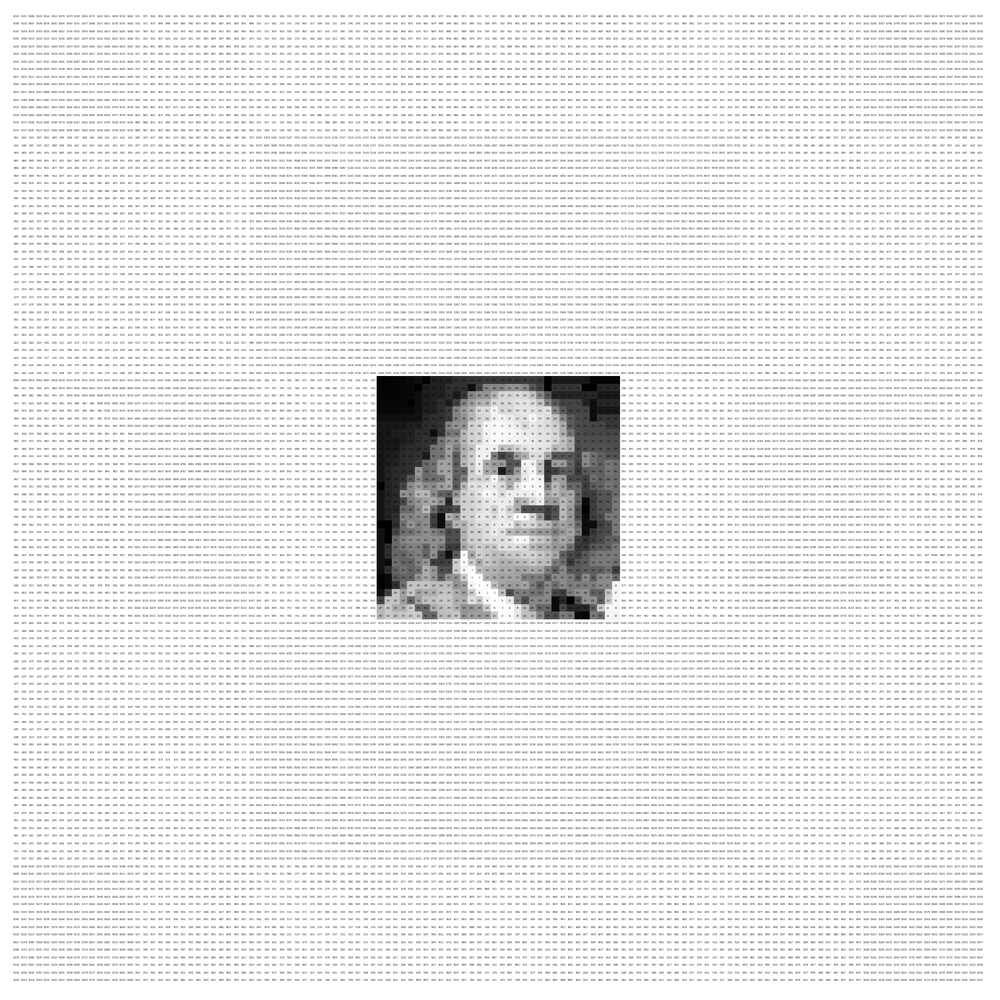
Let’s verify that this is indeed a magic square by checking the properties using the functions we defined above.
is_magic(franklin) and is_panmagic(franklin) and is_normal(franklin)TrueWe can see that the square is not only magic, but also panmagic!
Note that the center 32x32 square isn’t a magic square.
is_magic(franklin[48:80, 48:80])FalseThe numbers in the center square do range from 1 to 1024.
is_normal(franklin[48:80, 48:80])TrueBy looking at the entire magic square as a heatmap, we can get a better understanding of how the magic square is structured.
plot_square(franklin, center_only=False, figsize=(10, 10))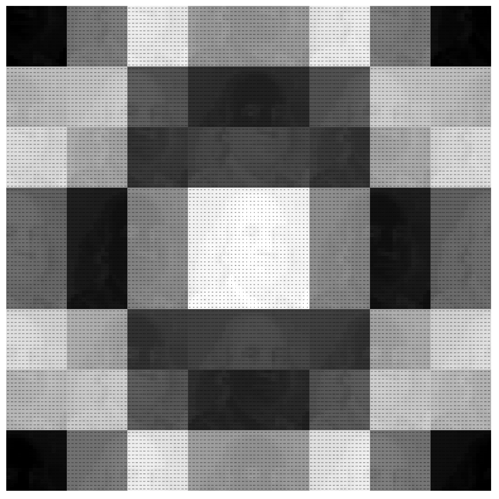
Franklin’s picture seems to not only be contained in the center 32x32 square, but repeats itself in the surrounding area. Furthermore, half of the pictures appear to be inverted.
The key to understanding how to create these was actually another example from Ot Ottenheim’s blog.
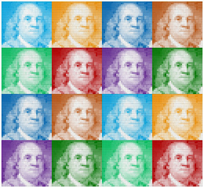
This magic square shows the same picture of Benjamin Franklin, but this time in a 4x4 grid. It made me realize that the magic square that shows the picture of Franklin in the center is actually the same 4x4 grid but scrambled.
By zooming in on the 4x4 grid, and looking at the ranges of numbers in each subsquare, I found out that these magic squares are actually constructed from the same 4x4 panmagic square we looked at earlier.
print_square(ms4)| 1 | 8 | 10 | 15 |
| 12 | 13 | 3 | 6 |
| 7 | 2 | 16 | 9 |
| 14 | 11 | 5 | 4 |
Creating a magic square from an image step by step
Now let’s try to understand the process by taking a picture and creating a magic square. We’ll use a 16x16 sprite of Mario to create a 64x64 magic square.
Loading the image
We start by loading the image from disk.
from PIL import Image
mario_sprite = Image.open('mario.png')This is what the image looks like in color:
plt.imshow(mario_sprite)
plt.axis('off')
plt.show()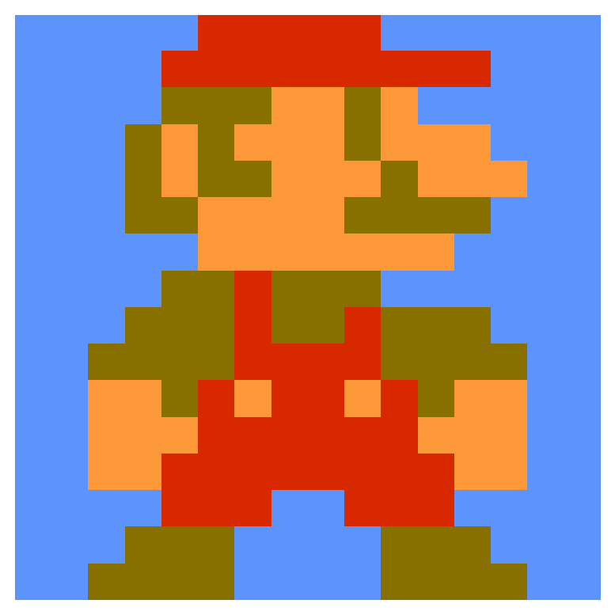
Converting the image to grayscale
In order to embed the image into a magic square, we need to convert it to grayscale. We also want 0 to represent white and 255 to represent black, so we need to invert the colors.
mario_grayscale = mario_sprite.convert('L')
mario_grayscale = 255 - np.array(mario_grayscale, dtype=int)In greyscale, the image looks like this:
plt.imshow(mario_grayscale, cmap='gray_r', interpolation='nearest')
plt.axis('off')
plt.show()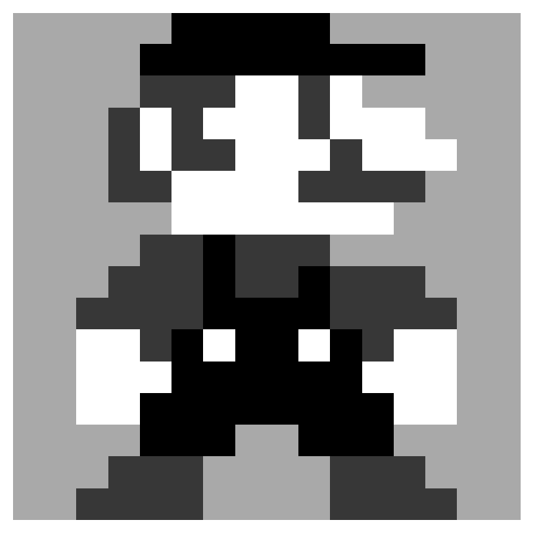
Mapping pixel values to a range from 1 to 256
We need to convert the pixel values to a range from 1 to 256, without duplicate values, so we can use them in a magic square. We can do this by ordering the pixels from light to dark and then give each pixel a new value starting from 1.
def relabel_unique(arr):
n = arr.shape[0]
flat = arr.flatten()
# Get sorted indices for stable relabeling
sorted_indices = np.argsort(flat, kind='stable')
# Create an empty array for the relabeled values
relabeled = np.empty_like(flat)
# Assign numbers 1 to n^2 in the order of sorted values
relabeled[sorted_indices] = np.arange(1, n*n + 1)
# Reshape back to original shape
return relabeled.reshape(arr.shape)mario_relabeled = relabel_unique(mario_grayscale)plot_square(mario_relabeled, center_only=False, show_values=True, figsize=(5, 5))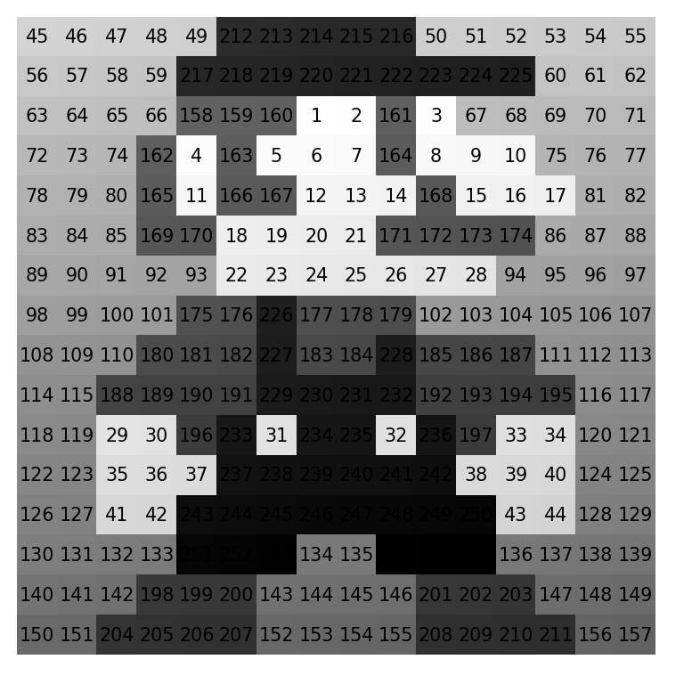
Now no two pixels have the same value.
Tiling the image into a magic square
We can now start composing the actual magic square. Remember that we’ll use the 4x4 panmagic square shown earlier as our base.
print_square(ms4)| 1 | 8 | 10 | 15 |
| 12 | 13 | 3 | 6 |
| 7 | 2 | 16 | 9 |
| 14 | 11 | 5 | 4 |
We want to tile copies of the image into a 4x4 grid. The 4x4 panmagic square will tell us the range of numbers that will be used in each of these copies.
The top left value of the 4x4 panmagic square is 1, so the top left copy of the image in the 4x4 grid of tiles will contain the pixels with values from 1 to 256. The value 2 in the panmagic square indicates that the copy of the image in the third row/second column will contain pixels with values from 257 to 512, and so on.
The following code takes care of this tiling process.
mario_tiled = np.kron(ms4 - 1, np.ones(mario_relabeled.shape, dtype=int)) * np.max(mario_relabeled) + np.tile(mario_relabeled, ms4.shape)plot_square(mario_tiled, center_only=False, show_values=True, figsize=(10, 10))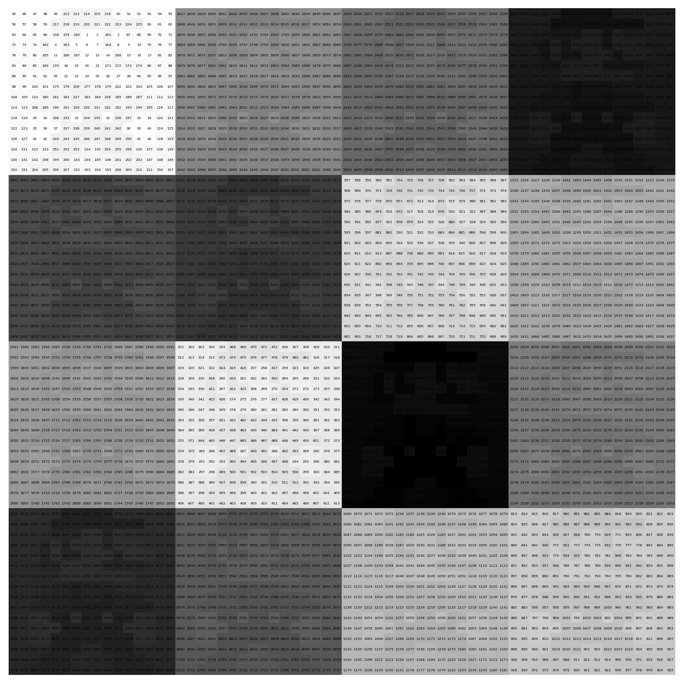
Inverting half the tiles
Our magic square is not yet complete. We still need to invert half of the tiles, as we saw in the example with Franklin’s picture.
The following function replaces each number in the square with its complementary number. The complementary number is defined as \(n^2 + 1 - x\) where \(x\) is the number in the cell and \(n\) is the size of the tile (in this case 16).
def complement_square(m):
min_val = np.min(m)
max_val = np.max(m)
comp_sum = min_val + max_val
return comp_sum - mThe next function applies this transformation to the tiles based on a boolean mask that indicates which tiles to invert.
def conditional_complement_blocks(bool_mask, arr):
n_blocks = 4
block_size = arr.shape[0] // 4
out = arr.copy()
for i in range(n_blocks):
for j in range(n_blocks):
if bool_mask[i, j]:
r0, r1 = i * block_size, (i + 1) * block_size
c0, c1 = j * block_size, (j + 1) * block_size
out[r0:r1, c0:c1] = complement_square(arr[r0:r1, c0:c1])
return outWe want to invert 2 tiles in each row and column. One easy way to do this is to invert the tiles where the value in the panmagic square is larger than 8.
mario16x = conditional_complement_blocks(ms4 > 8, mario_tiled)Let’s see if we indeed ended up with a magic square.
is_magic(mario16x) and is_panmagic(mario16x) and is_normal(mario16x)TrueAnd indeed, the square is magic and panmagic, just like we wanted!
Plotting the tiled images
The following function plots the magic square as a heatmap, where each tile is plotted in a different color.
from matplotlib.colors import LinearSegmentedColormap
import matplotlib.colors as mcolors
def plot_square_colored_blocks(m, show_values=True, figsize=(8, 8)):
invert = ms4 > 8
n = m.shape[0]
block_size = n // 4
# Define a list of colors to cycle through
tab_colors = list(mcolors.TABLEAU_COLORS.keys())
plt.figure(figsize=figsize)
plt.xlim(-0.5, n)
plt.ylim(n, -0.5)
for i in range(4):
for j in range(4):
r0, r1 = i * block_size, (i + 1) * block_size
c0, c1 = j * block_size, (j + 1) * block_size
block = m[r0:r1, c0:c1]
color = tab_colors[(i * 4 + j) % len(tab_colors)]
colors = ['white', color] if not invert[i, j] else [color, 'white']
cmap = LinearSegmentedColormap.from_list(f'cmap_{i}_{j}', colors)
plt.imshow(block, cmap=cmap, interpolation='nearest', extent=(c0 - 0.5, c1 - 0.5, r1 - 0.5, r0 - 0.5))
if show_values:
ax = plt.gca()
fig = plt.gcf()
bbox = ax.get_window_extent().transformed(fig.dpi_scale_trans.inverted())
width, height = bbox.width * fig.dpi, bbox.height * fig.dpi
cell_width = width / n
n_digits = len(str(abs(n * n)))
for (j, i), label in np.ndenumerate(m):
plt.text(i, j, label, ha='center', va='center', color='black', fontsize=cell_width / n_digits)
plt.axis('off')
plt.show()plot_square_colored_blocks(mario16x, figsize=(10, 10))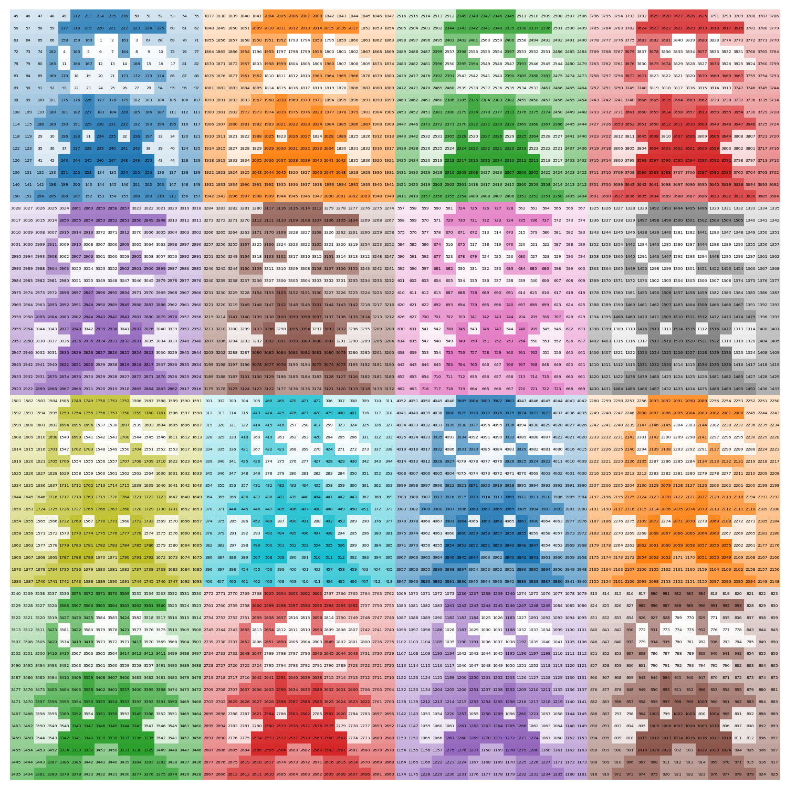
We can save this magic square to a file if we want.
np.savetxt("mario16x.csv", mario16x, fmt='%d', delimiter=";")Centering the image
As mentioned before, a property of panmagic squares is that moving columns from the left side to the right side, or moving top rows to the bottom, will always yield another panmagic square.
We can use this property to center the image.
d = mario16x.shape[0] // 8 * 5
mario_shifted = np.hstack((mario16x[:, d:], mario16x[:, :d]))
mario1x = np.vstack((mario_shifted[d:, :], mario_shifted[:d, :]))plot_square(mario1x, center_only=True, show_values=True, figsize=(10, 10))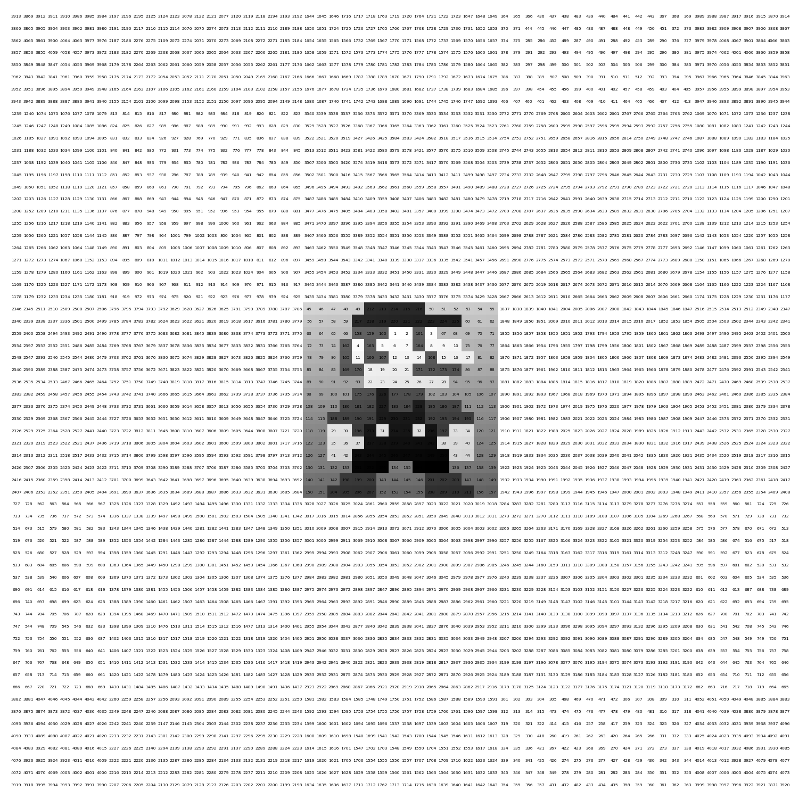
As expected, the resulting magic square is still panmagic.
is_magic(mario1x) and is_panmagic(mario1x) and is_normal(mario1x)TrueAmazing! Now let’s save it to a file.
np.savetxt("mario1x.csv", mario1x, fmt='%d', delimiter=";")All steps in one function
For convenience, we define a function that combines all steps. The function takes an image file path, resizes it to the provided size, and returns a magic square that contains the image. Centering the image is optional.
def create_magic_square_from_image(image_path, image_size=(32, 32), center_image=True):
# Load and process the image
sprite = Image.open(image_path).resize(image_size, Image.LANCZOS)
sprite_gray = sprite.convert('L')
sprite_array = 255 - np.array(sprite_gray, dtype=int)
# Relabel the unique values in the image
relabeled_sprite = relabel_unique(sprite_array)
# Create a tiled magic square
tiled_magic_square = np.kron(ms4 - 1, np.ones(relabeled_sprite.shape, dtype=int)) * np.max(relabeled_sprite) + np.tile(relabeled_sprite, ms4.shape)
# Apply conditional complement blocks
complemented_magic_square = conditional_complement_blocks(ms4 > 8, tiled_magic_square)
# Center the image in the magic square if required
if center_image:
d = complemented_magic_square.shape[0] // 8 * 5
shifted_magic_square = np.hstack((complemented_magic_square[:, d:], complemented_magic_square[:, :d]))
centered_magic_square = np.vstack((shifted_magic_square[d:, :], shifted_magic_square[:d, :]))
return centered_magic_square
return complemented_magic_squareCreating some more magic squares
Now that we have a function to create magic squares from images, let’s create some more. I’ve chosen images of people who have, like Benjamin Franklin, created, or studied magic squares.
Srinivasa Ramanujan
Srinivasa Ramanujan was an Indian mathematician who made significant contributions to mathematical analysis, number theory, infinite series, and continued fractions.
Ramanujan also came up with the following magic square:
| 22 | 12 | 18 | 87 |
| 88 | 17 | 9 | 25 |
| 10 | 24 | 89 | 16 |
| 19 | 86 | 23 | 11 |
In it, the sum of each row, column, and diagonal is 139. In addition, the sum of any 2x2 box is also 139. As the cells are not consecutive integers starting from 1, this is not a normal magic square. The first row shows his birthdate (22/12/1887).
ramanujan1x = create_magic_square_from_image('ramanujan.jpg', image_size=(64, 64), center_image=True)
plot_square(ramanujan1x, center_only=True, show_values=True, figsize=(10, 10))
np.savetxt("ramanujan1x.csv", ramanujan1x, fmt='%d', delimiter=";")The resulting file can be found here.
John Horton Conway
John Conway made contributions to many branches of recreational mathematics. He’s likely best known for inventing the Game of Life.
He also thought up an interesting method to construct magic squares of order 4n+2, where n is a natural number, which he called the Conway’s LUX method.
conway1x = create_magic_square_from_image('conway.jpg', image_size=(64, 64), center_image=True)
plot_square(conway1x, center_only=True, show_values=True, figsize=(10, 10))
np.savetxt("conway1x.csv", conway1x, fmt='%d', delimiter=";")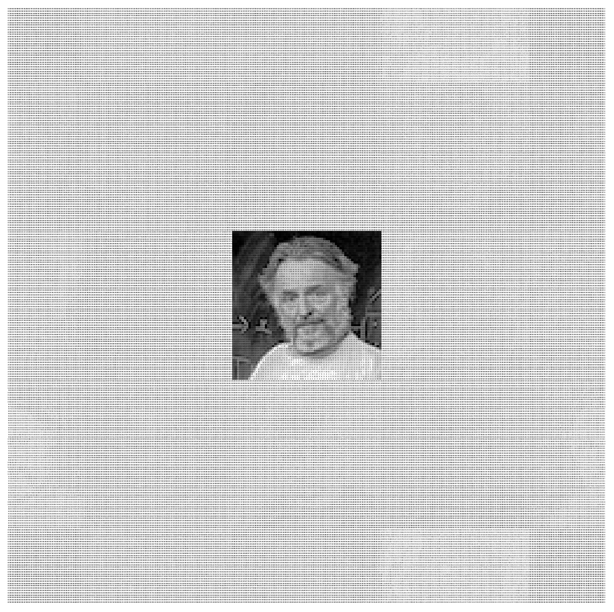
This file is the result of saving this magic square.
Leonhard Euler

Leonhard Euler was a Swiss mathematician and physicist who made important discoveries in fields like calculus, graph theory, topology, mechanics, fluid dynamics, astronomy, and number theory.
In 1770 Euler found a magic square of order 4 filled with squares.
| 68² | 29² | 41² | 37² |
| 17² | 31² | 79² | 32² |
| 59² | 28² | 23² | 61² |
| 11² | 77² | 8² | 49² |
euler16x = create_magic_square_from_image('euler.png', image_size=(32, 32), center_image=False)
plot_square_colored_blocks(euler16x, show_values=True, figsize=(10, 10))
np.savetxt("euler16x.csv", euler16x, fmt='%d', delimiter=";")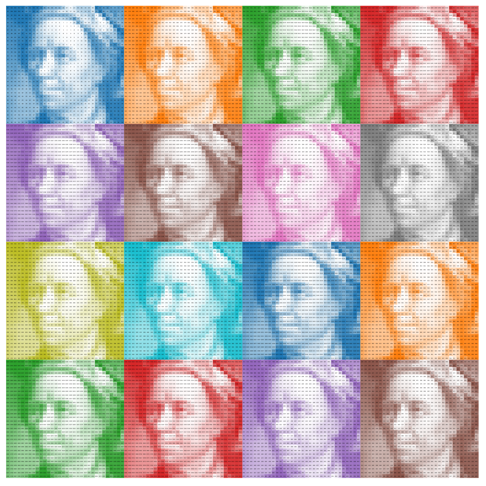
This time I chose to not center the image. Download the resulting file from here.
Try it using your own images
Want to turn your own image into a magic square? You can find my code as a GitHub gist:

Enjoy!